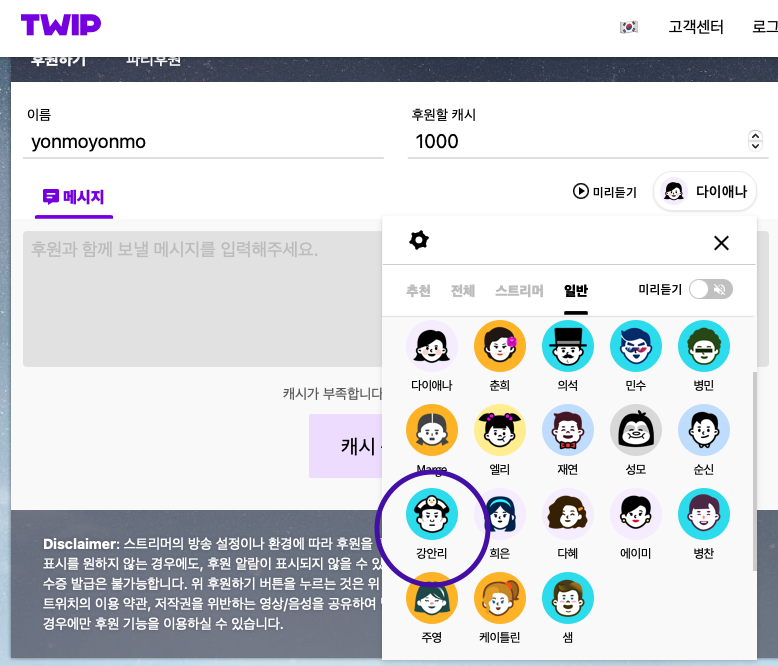
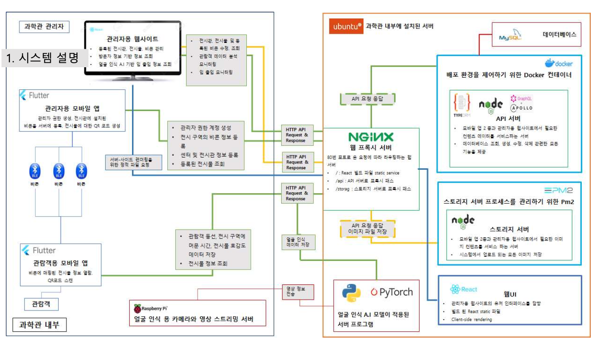

TTS 강안리와 관련한 내용
Twip에서 서비스하는 Twitch 오버레이 서비스 중에 TTS를 이용해 자신이 좋아하는 스트리머에게 돈을 줄 수 있는 기능이 있다. 수 많은 TTS 중 하나, 강안리를 LOCS에서 서비스 했었는데, 초기에는 AWS EC2 + Elastic Inference 조합으로 클라우드에서 서비스 했다가, 나중에 비용 문제로 회사 on-premise 서버에 GTX 1080TI를 하나 달아서 서비스 했었다. 초기 AWS 세팅은 다른 사람이 했었지만, 그 사람이 퇴사한 후 내가 맡아서 관리했다. On-premise로 이전도 하고, 하루 100여명 정도 사용되는 서비스 였으므로 서비스 상태도 관리했다. 이후 회사에서 TTS 데모 페이지를 제작할 때 인공지능 팀과 협업하여 데모 API를 만들고, 주기적으로 새 TTS 모델을 업데이트했다. 내가 퇴사할 때 또 다른 개발자에게 관리를 넘겨주고 나왔다.
스마트 과학관이란?
 😉▶️시연 영상
시연영상을 보셨다면... 보신 듯 전시관을 통합 관리할 수
있도록 설계된 시스템이다. 국책 과제 사업이었고, 당시 데이터베이스
스키마부터 관람객용, 관리자용 모바일 앱을 비롯해 관리자용
웹UI까지, 처음 부터 끝까지 혼자 작업했다.
사용기술
- 모바일 앱 개발 : Flutter
- 과학관 전시물 API : node.js express, typeORM, Nginx, MySQL
- 과학관 전시물 이미지 스토리지 서버 : node.js express
- 웹 UI : react.js
완성된 프로그램은 아니지만 재미있었던 것들...
C++로 구현한 자료구조 Examples
GitHub Repository자료구조에 대한 이해를 높이기 위해서 C++을 가지고 큼직큼직하게 만들어 보았었다.
Spring 없이 HTTP 통신하기
GitHub Repository스프링 프레임워크 도움 없이 자바프로젝트를 시작할 때 HTTP통신을 하려면 어떻게 하는게 좋을까 싶어 만들었다.